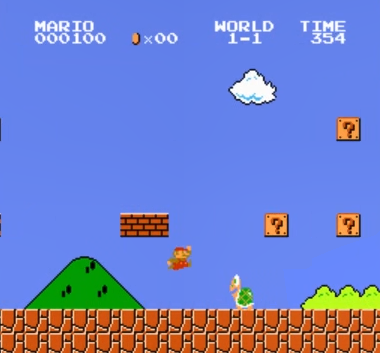

前言
这个想法其实已经在脑海里酝酿很久了，但是今天决定开个博客记录一下整个思考的过程，不然额也不知道会拖到什么时候才去做这个。
想做这个 tiny project 的主要原因是我觉得我强化学习学的依托史，只是在肤浅地学习一些概念和算法，然后假模假样地看看代码，就当是学过了，实际上完全没有实践过。
一开始本来想做强化学习麻将的，但是调研了一下发现可供参考的资料太少了，于是还是先从兼具趣味性与教学性的《超级马里奥》入手，开始探索一下如何真正将强化学习应用在实践中。
本项目期望目标如下：
- 采用 DQN/PPO 算法，搭建强化学习框架 (Based on gym-super-mario-bros)
- 搭建或部署训练过程的可视化工具（这样直观 也具有趣味性）
- 最终目标是让我们训出来的AI马里奥可以通关游戏！

概念
PyTorch Docs 中有一个基于 DQN 的教程，基于马里奥这个项目简单回顾了一下强化学习的组成元素：
- 智能体：当然是马里奥大叔；
- 环境：每个游戏关卡都可以看作环境，由砖块，蘑菇，管道组成；
- 动作：左右移动和跳跃。事实上为了通关第一关的话，只需要向右移动和跳跃两个动作就行了；
- 状态：我们可以把每一帧游戏画面当做是一个状态，比方说如果前面是一个管道，那我们就应该执行跳跃动作；为了压缩空间，我们还会对游戏画面做一些预处理操作。
- 奖励：我们可以拿马里奥向前走的距离 (x_position) 作为奖励函数，走得越远说明离目标越近。当然还有一些其他因素（如通关时间，吃到金币数等）。
简单思考之后，我们来深入细节展开分析一下。
1. 环境与包装器
我们直接采用 gym 里面的马里奥搭建环境 env，OpenAI Gym 提供了一个标准化的环境接口，能够创建、测试和比较不同的强化学习代理。有了这个，我们就可以很容易定义环境、动作空间等概念。当马里奥采取动作时，Gym 环境会返回下一个状态、奖励和其他信息。
# Initialize Super Mario environment (in v0.26 change render mode to 'human' to see results on the screen)
if gym.__version__ < '0.26':
env = gym_super_mario_bros.make("SuperMarioBros-1-1-v0", new_step_api=True)
else:
env = gym_super_mario_bros.make("SuperMarioBros-1-1-v0", render_mode='rgb', apply_api_compatibility=True)
# Limit the action-space to
# 0. walk right
# 1. jump right
env = JoypadSpace(env, [["right"], ["right", "A"]])
env.reset()
next_state, reward, done, trunc, info = env.step(action=0)
print(f"{next_state.shape},\n {reward},\n {done},\n {info}")
返回的状态是一个 256*256 像素的 RGB 游戏画面，但显然里面很多信息是可以省略的（如颜色不是那么有用，也没必要把每一帧都抽出来）。因此我们可以用**包装器（Wrappers）**对状态在发送给智能体之前对其进行预处理。
- SkipFrame：继承自
gym.Wrapper并实现了step()函数。由于连续帧变化不大，我们可以跳过 n 个中间帧而不会丢失太多信息。第 n 帧聚合了每个跳过帧累积的奖励，规定每隔 n 帧才处理一次观测和动作，可以加快训练速度的同时，保持游戏的连续性。 - GrayScaleObservation：将RGB彩色图像转换为灰度图像，仍然保留了游戏的主要视觉特征，同时降低了输入数据的维度（从 3 通道减少到 1 通道），加速训练过程。
- ResizeObservation：将图像缩放到指定的大小（默认84x84），统一输入尺寸，便于神经网络处理，同时降低了计算复杂度。
- NormalizeObservation：将像素值从 [0, 255] 归一化到 [0, 1] 范围，有助于神经网络的训练稳定性，防止数值过大导致梯度问题。
- FrameStack：堆叠最近的几帧（默认4帧）从而将环境的连续帧压缩成一个单一的观察点，以馈送到我们的学习模型。这样，我们可以根据马里奥在之前几个帧中的移动方向来判断他是着陆还是跳跃，使智能体能够感知时间信息和动作效果。
最终观察空间的形状变成了(4, 84, 84)，这对于一个 CNN 来说就很方便了。
2. 奖励函数
Agent 跟环境交互后，可以根据环境状态获得额外的奖励值。例如前进奖励：通过比较坐标，每前进1个单位，获得0.1的额外奖励、根据时间剩余给予奖励（鼓励速度）、收集金币奖励等。
3. 网络建模
普通的 Q 网络就是先搭一个 CNN 去捕捉画面的特征信息，再套一个 MLP 对 特征进行 K 分类（K 是智能体的所有动作）。对于 DuelingDQN，我们将 Q 函数建模为： ，即分别计算状态函数价值函数，以及（状态，动作）的优势函数，从而更好捕捉与动作关联较小的状态。此事在 学习笔记【三】 中亦有记载。
对于 PPO 来说，底层采用的是Actor-Critic 架构。Actor 基于 Critic 的评价选取下一轮的动作，Critic 给 Actor 的动作进行打分。对于 Mario-RL 项目，我们采用一个共享的卷积神经网络（CNN）提取特征。Actor 进行一个 K 分类任务输出动作概率，Critic 进行回归预测输出值函数。
Model 层算是整个结构中的底层，之后我们基于 Model 搭建强化学习的智能体，实现 RL 算法的核心逻辑。
4. Agent 建模
DQN 的核心就是双网络结构，一套策略网络正常采样动作更新参数，一套目标网络计算Q值，实现更好的稳定性。同时我们也创建一个经验回放缓冲区，用以存储和采样过去的经验。选择动作时，使用 Epsilon-Greedy 策略： 低于某个值时随机采样，否则采用当前策略网络采样最优动作。优化模型时，先从 buffer 采样一批数据。根据当前状态和动作，通过策略网络计算 q_value，再根据 next_state 通过目标网络计算 next_q_value，计算二者之间的 Loss.
对于 PPOAgent，我们使用一个网络 PPONetwork 同时实现Actor和Critic功能。我们先根据 Critic 提供的状态价值计算TD误差、构建Actor的优势函数；在根据优势函数计算 Actor 的策略损失。采用了一个 PPO 截断的策略，此事在 学习笔记【四】 亦有记载。
值得注意的是，PPO 是在线学习算法，这意味着其策略更新是基于当前策略的经验进行的。因此PPOAgent 不应采用 ReplayBuffer，而采用自己的 PPOMemory存取数据。具体来讲，PPOMemory 存储的是一次“完整的轨迹”数据（状态、动作、奖励、状态值等），并且会 在策略更新期间一次性使用这些数据，以保证它在策略优化时使用的样本是和当前策略相关的；第二，PPO使用 重要性采样 来计算新旧策略之间的比率，如果二者之间差距过大，不利于训练的稳定性；此外，PPO在每次训练时需要对整个轨迹的数据进行更新，这是因为PPO的目标函数基于优势函数，其计算依赖于完整轨迹，以计算其长期累积奖励（Returns）。
6. 训练和评估
Train.py 包含了有关 DQN 和 PPO 的训练流程。先创建对应的关卡环境，创建DQN或PPO智能体，调用各自的训练函数：train_dqn 函数实现了一个 off-policy 算法，使用经验回放从过去收集的经验中随机采样进行学习。以 PPO 算法为例，模型一共会训练 N steps ( N一般会很大 )，因为 PPO 是 on-policy 算法，每个 episode 会连续训练一轮完整的游戏（对于 DQN 而言，则是利用 Replay Buffer）。
# 选择动作
action, log_prob, value = agent.select_action(state)
首先，Agent 会根据当前状态（即环境）获取一个动作（Actor 给出）及其对应的评分（Critic 给出）。
# 执行动作
next_state, reward, terminated, truncated, info = env.step(action)
done = terminated or truncated
其次，Agent 执行该动作与环境交互，环境给出下一个状态、环境给出的奖励、是否终止等信息。
# 存储经验
agent.store_transition(state, action, log_prob, value, reward, done)
...
# 达到n_steps或回合结束时更新策略
if step_count % n_steps == 0 or done:
loss_info = agent.learn()
最后，Agent 暂存这次动作学习的经验，用以本轮的训练中。
7. 最终结果
一开始训了十万步，路都走不明白，于是直接翻到了一百万步，这下训练效果就还可以了，在七十万步左右的时候顺利通关！

可以看到马里奥大叔的步伐还是相当稳健，走起路来火花带闪电，甚至最后磕头小跳双杀蘑菇头也有点炫。可以说模型训练得还是比较成功的。
博客写到这里可以说是告一段落了，最后跟大家坦白一下，本项目的所有代码可以说几乎就是 Claude 3.7 一个人写完的，笔者只是在其基础上做了些许的改动，完全可以直接上手运行。感慨大模型发展迅猛之时，也请不要忘记其背后的底层逻辑，还有赋予其魔法的强化学习。
博客好久没更新了，不是不想，脑子里还是有不少东西想写成博客整理下来，奈何守望先锋太好玩，把我空闲时间全吃了，看看之后有没有机会写一两篇真正有含金量的博客出来，最近写的东西还是太过基础了。
最后，本项目已开源，欢迎尝试：https://github.com/TURLEing/mario_rl .